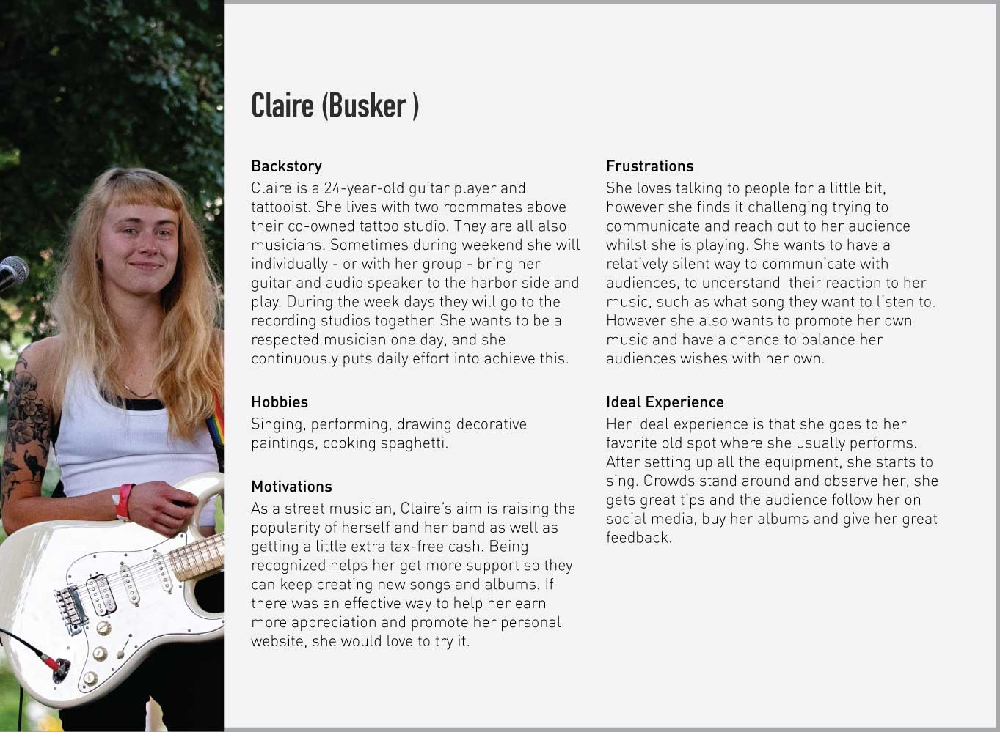

The Brief
We were given the task to augment our own reality. Our task was to improve an existing social interaction in a particular space within Sydney using technology.
Ideation and defined business opportunity
Ideation
Design thinking methods were used to understand the existing state of augmentation within Sydney and potential opportunities.
Defined Business Opportunity
"Buskers in Sydney's CBD can use technology to enhance their success in engaging with their audience."
Research Results
Initial semi-structured and structured interviews were conducted to provide an understanding of the relevance of the problem. 3 buskers, 2 busking organizations and 2 citizens were interviewed. This was complimented by an online questionnaire reaching 20 Sydney residents.
Key Interview Findings
- All buskers interviewed were happy to talk to their audience
- Audience members generally felt uncertain about approaching buskers
- Half of the buskers interviewed were happy to take song requests
- Audience members said they would listen longer and donate more if they could recommend songs
- The majority of buskers were happy to receive positive or well intended feedback.
- All audience members said they were happy to give positive feedback but did not want to give constructive feedback
Key Questionnaire Findings
- 80% of audience members would prefer to hear a favourite song of theirs over an original song of the artists
- The choice of song was equally as important as how well they played
- 73% had never spoken to a busker
- The number 1 reason for not talking to a busker was fear of distruption
Existing technology
Walk21vienna: An app which helps promote street performers in a number of different ways. They offer a system for them to be paid online to meet the demand of a cashless society. They promote them so people in the area know they are performing and advocate for them at council meetings and in courts. BuSK: This app helps to promote and offer a system of cashless payments for street performers. The Online Busker: Legal music downloading where the donation amount is optional.
- Existing solutions have not yet reached the critical mass.
- Existing apps fill the need for an increasingly cashless society as well as assisting in promotions.
- The online busker, fits the need that the world is moving online.
The Gap
There are currently no technological solution to assist the buskers in engaging the audience once they are performing.

Problem Statement
- Sydney residents need a method of indirectly communicating with buskers in Sydney's CBD so that they are more engaged without fearing disruption.
- Buskers in Sydney's CBD need a method of increasing audience communication to improve satisfaction leading to profit increase
Design Thinking
The design thinking process used to understand the problem and uncover user-centric solutions. This session included developing personas, mapping out the user journey, developing needs statements and ideating solutions.
The Solution
Buskus is an app that allows buskers to increase their engagement with audiences. The application allows audiences to select songs from the playlist and send praise, discover where and when they are performing and digitally tip.
Planning and Prototyping
User Test Method
The test uses the semi-structured interview method, where the user is asked to perform a series of tasks. The purpose of this is to understand usability flaws so they can be revised. The nature of this interview allows users the opportunity to suggest ways they feel most comfortable using the interface.